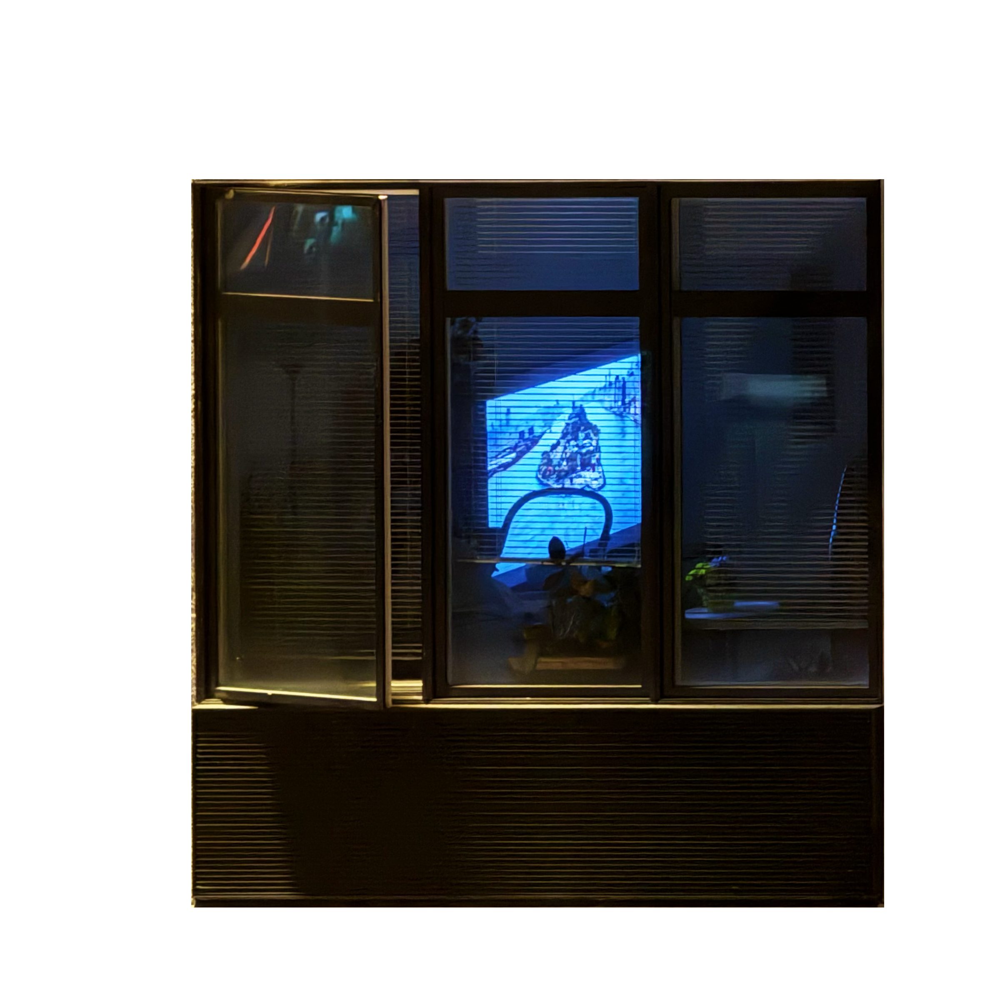

Developmental psychologist Dr. Ganz Ferrance describes the desire to see other people as a healthy impulse. It reassures us that we are not alone and helps us recognize ourselves in the actions of others. The city offers this reassurance constantly: one illuminated room, one moving figure, one ordinary routine at a time.
But a window creates a one-sided relationship. The observer receives gestures and details without entering the room or announcing their presence. Architecture provides a secure stage for the person inside while allowing the person outside to remain invisible.
The first glance may be accidental. Duration changes it. When the eye waits for another movement or returns to the same window, curiosity becomes a deliberate act of watching.
THE CITY BECOMES A LOOKING-GLASS.
Ferrance argues that people seek images of others because belonging is a basic human need. Windows answer that need with a form of closeness that requires no conversation and offers no possibility of correction.
Distance makes the scene feel harmless. Sound disappears, people become silhouettes, and furniture becomes evidence. The observer can mistake reduced information for emotional safety.
Sidewalks, neighboring buildings, and elevated viewpoints continually produce new frames. The city organizes strangers into small theaters that can be entered visually but not socially.
This is the contradiction of the looking-glass: the room feels close enough to know and far enough to possess. Physical separation does not remove intimacy; it makes intimacy easier to observe without responsibility.
WATCHING CAN CREATE A FALSE SENSE OF OWNERSHIP.
In the radio story The Living Room, screenwriter Diane Weipert described watching a young couple in a neighboring building without ever meeting them. What began as observation grew into emotional involvement as she followed their routines, intimacy, changing decor, and eventually the man's terminal illness.
She bought binoculars and became invested in a story whose subjects did not know she existed. When paramedics removed the man's body, she ran into the street and confronted the impossible position she had created: she felt connected to people for whom she remained a stranger.
Ferrance links the pleasure of voyeurism to a sense of ownership. Repetition can make an unreciprocated relationship feel familiar, even intimate, while the observed person has no opportunity to consent, respond, or withdraw.
The observer possesses a sequence of images, not the life itself. Yet accumulated details can make that distinction increasingly difficult to remember.
THE ABILITY TO LOOK IS ALSO THE ABILITY TO STOP.
Ferrance describes rational inhibition as part of what allows humans to evaluate impulses instead of simply obeying them. Curiosity may begin the encounter, but judgment determines its duration.
A window does not grant permission. It only makes an image available. The moral boundary appears when seeing becomes collecting, following, or claiming knowledge.
Architecture can make the observer invisible, but invisibility does not remove responsibility. The private room remains private even when its light reaches the street.
Looking becomes most dangerous when familiarity is confused with participation. Repetition can produce emotional certainty without mutual recognition.
The viewer can continue watching, or can leave the story unfinished. The final limit is not always a curtain. Sometimes it is the decision to look away.

The city offers connection through framed views, but every view asks the observer to decide when attention has gone too far.
THE DANGER OF LOOKING BEGINS WHEN CONNECTION BECOMES POSSESSION.